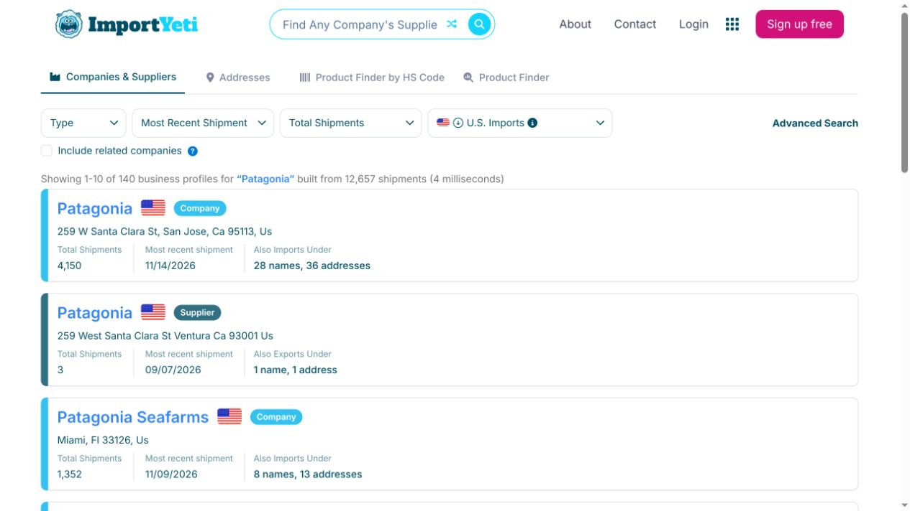
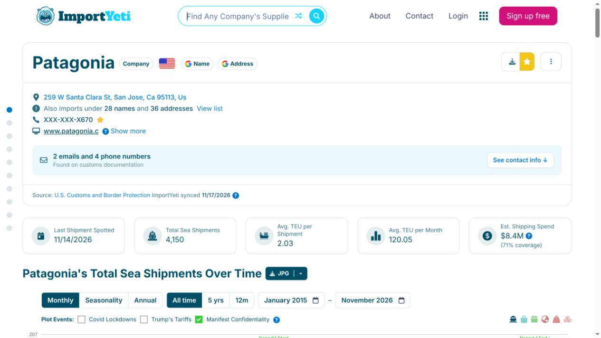

ImportYeti 实测：如何从海运记录反查品牌供应商
我们实际搜索 Patagonia，查看企业进口概览、供应商名单、出货次数和商品 HS Code，验证 ImportYeti 在供应商背景调查中的用途。
测试说明
本次测试使用 ImportYeti 无需登录的公开查询功能。我们以 Patagonia 为例，仅查看公开海运进口记录，没有注册账号、下载数据或提交个人信息。
页面数据会持续更新，文章中的数字和界面以 2026 年 11 月 19 日实际测试时为准。
第一步：搜索目标企业
在首页输入 Patagonia 后，结果页同时列出公司和供应商身份，并展示总出货次数、最近一次出货日期及关联名称。先确认公司地址和类型，可以减少同名企业造成的误判。

第二步：查看进口活动概览
进入企业详情后，可以看到最近出货时间、海运记录总量、平均 TEU 和估算运输支出。趋势图适合判断采购是否具有季节性，但估算值只能作为调查线索，不能替代企业提供的正式数据。

第三步：分析供应商和商品线索
供应商表格列出了供应商名称、所在国家、出货次数、商品描述和 HS Code。实务中可以用出货次数判断合作活跃度，再用商品描述和 HS Code 筛选与自己品类相关的工厂。
这些记录只能证明公开提单中出现过相关关系，不代表当前仍在合作，也不等于供应商已经通过质量、合规或交付能力审核。联系供应商前仍需独立验厂和资质核验。

实测结论
ImportYeti 适合用于美国进口商和供应商关系的初步调查，尤其适合寻找同类品牌的供应链线索。它不能替代供应商审核，也不覆盖所有运输方式和所有国家，因此更适合作为供应商发现流程的第一步。